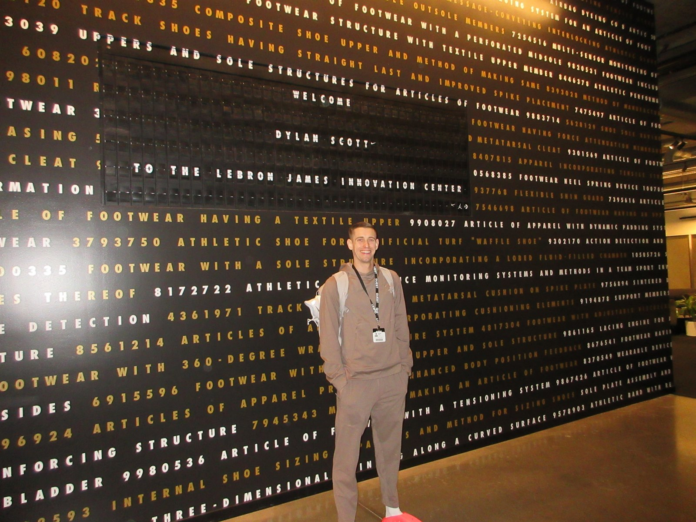
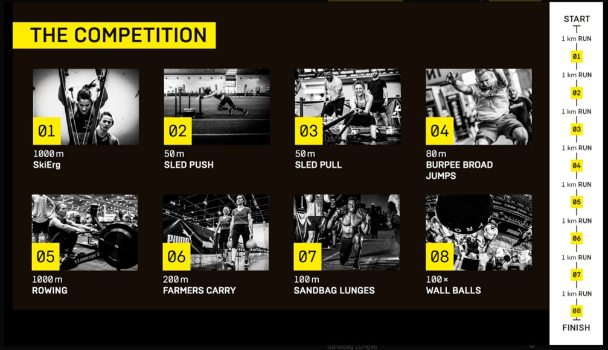
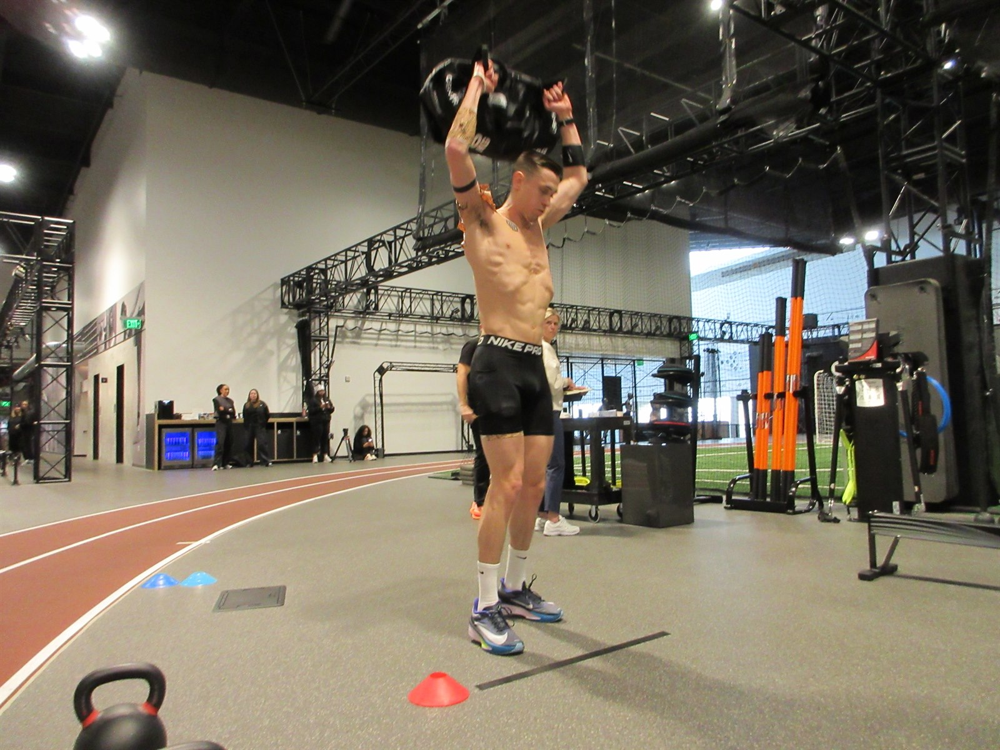
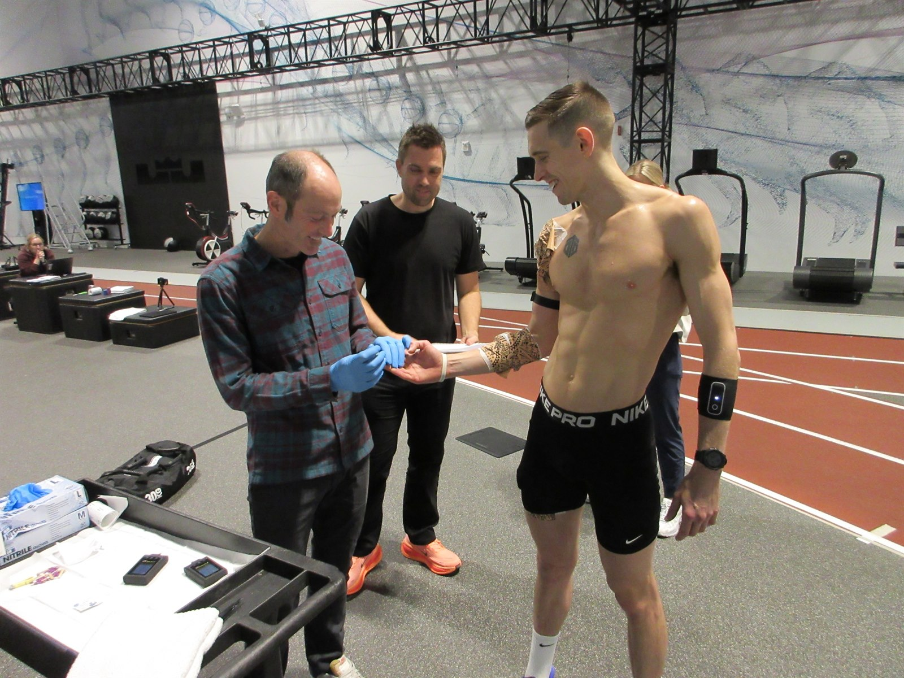
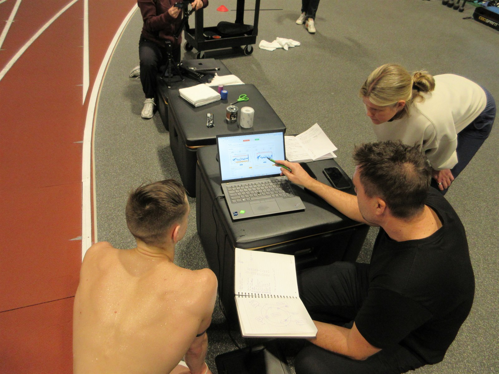
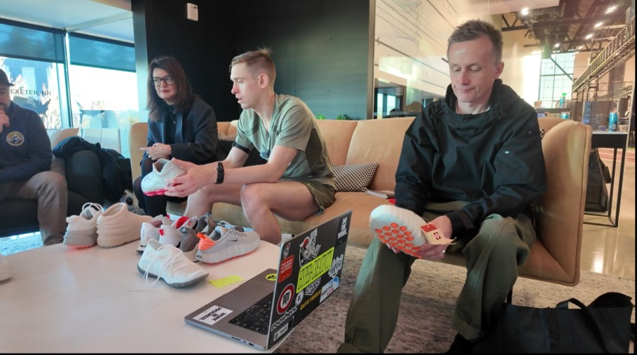
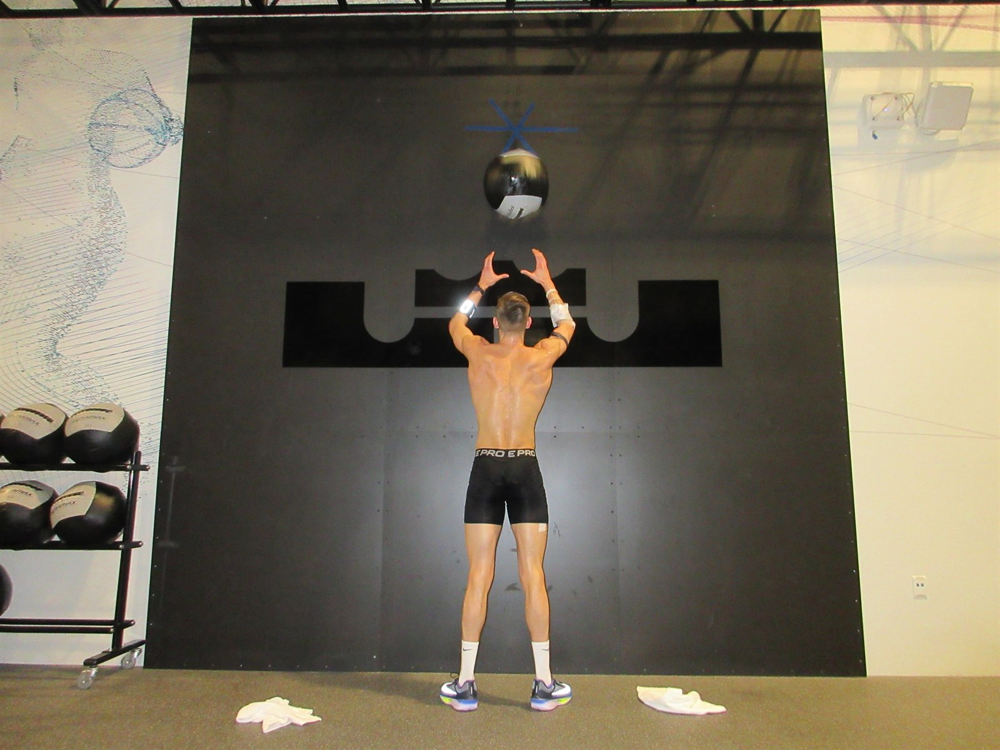
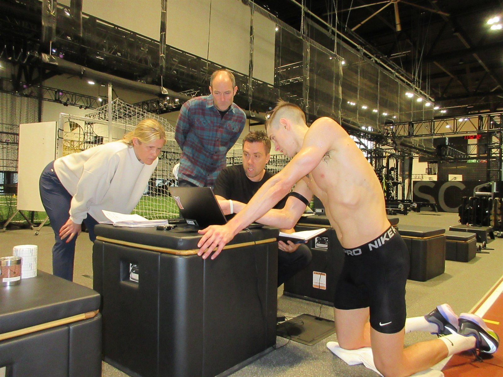

Dylan Scott is one of the best HYROX athletes in the world — 3rd place at the 2025 World Championships with a personal best of 54:47. He came to Nike World Headquarters to spend a day with the Applied Performance Innovation team in the Nike Sport Research Lab, learning more about himself and his body during HYROX-style exercise.
The primary goal: review his priming protocol, test race pace, examine thresholds of tolerance, and deploy strategies to improve performance.
HYROX is a fitness race that alternates 1 km runs with 8 functional workout stations — demanding power, endurance, and durability from every energy system in the body. The elite men's division sees athletes completing this gauntlet in under 60 minutes.

Some athletes have raw power, some have all-day endurance. HYROX demands everything — strength, power, endurance. Not just upper body, not just lower body, the whole body. It is all essential.

To model the demands of the second half of competition — where races are won and lost — Dylan performed a structured warm-up followed by the final five station-and-run sequences: Burpees, Row, Farmers Carry, Lunges, and Wall Balls, each separated by 1 km runs on the indoor track.
Throughout the session, the team captured venous blood lactate, heart rate, and local muscle oxygenation (Moxy sensors on the shoulder, forearm, and quadriceps) to map the shifting physiological demands in real time.

The lactate profile told a clear story: the metabolic cost didn't build linearly — it spiked with each station and partially cleared during running segments, creating a repeated metabolic rollercoaster.
The highest lactate spike — 7.1 mmol/L during Wall Balls — came at the very end of the session. This matches the race structure: the final station demands sustained upper-body work while the entire system is already fatigued from the preceding 45+ minutes.

Dylan spent significant time giving feedback on the latest footwear developments. His insight was specific and direct — shaped by racing at the highest level.

Dylan's message was consistent: the elite HYROX athlete wants a running shoe that can handle the stations — not a cross-trainer that happens to run. Speed on the 1 km segments is where the biggest time gains live, and compromising that for station stability is a trade-off most top competitors wouldn't make.
He also tried on the weighted compression hoodie and immediately said with a wide smile: "This feels like a big hug."

Wrapping up the day was a discussion around future opportunities — how to prime, how to recover, and how to train the transitions that separate podium finishers from the rest.
